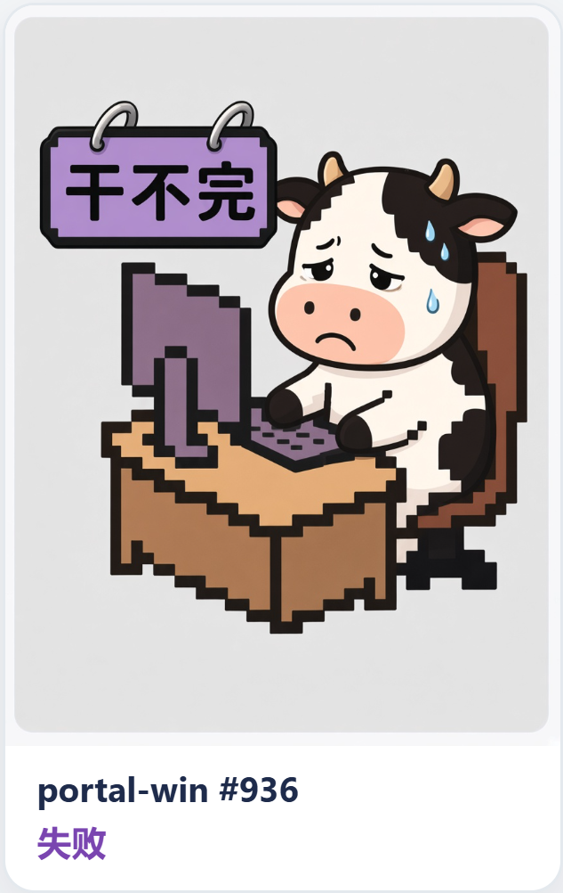
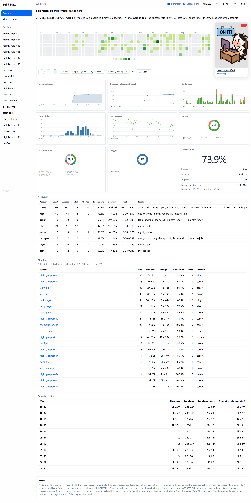
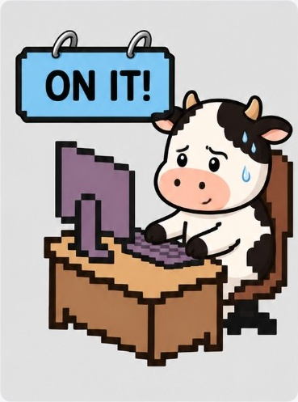
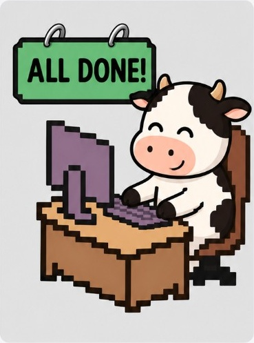
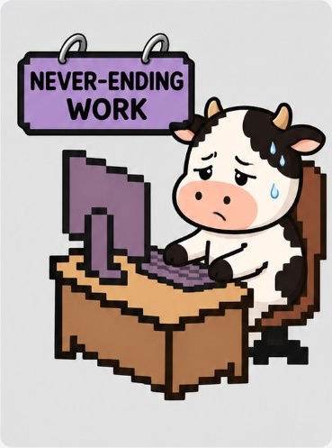
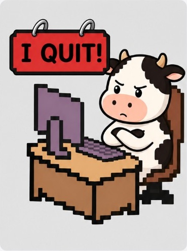
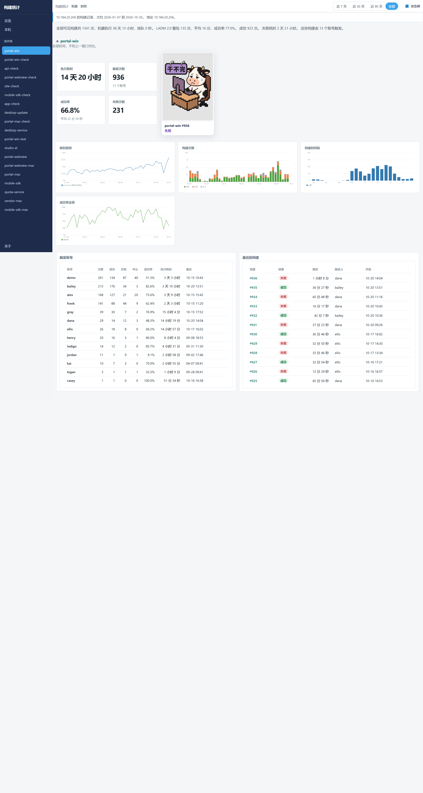
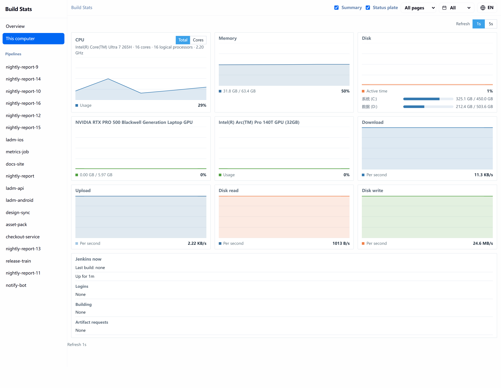
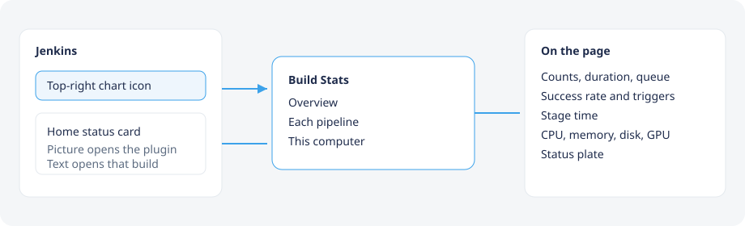

构建统计 Build Stats
当前账号能看到的构建，收成一页：次数、耗时、排队、成功率，以及流水线阶段耗时。
The builds you can see, on one page: counts, duration, queue time, success rate, and pipeline stage time.



状态牌Status plates
总览和每条流水线都挂着这块牌子，跟着当前范围内最新一次构建变。
The overview and each pipeline carry this plate. It follows the newest build in the current range.
-

在干了ON IT!
正在构建Running
-

干完了ALL DONE!
成功Success
-

干不完NEVER-ENDING WORK
失败或不稳定Failure or unstable
-

不干了I QUIT!
中止或未构建Aborted or not built
一条流水线One pipeline
每条流水线单独一页。有 Pipeline Stage View 的数据时，页上还有阶段耗时。
Each pipeline has its own page. Stage duration appears when Pipeline Stage View data exists.




这台电脑This computer
运行 Jenkins 的这台机器：CPU、内存、磁盘、显卡、网速，以及磁盘读写。
The machine running Jenkins: CPU, memory, disk, GPU, network, and disk throughput.
从哪里进来How to open it
右上角的折线图标进入插件。首页右下角的状态牌可以拖动、收到右边，或关闭。点图片进入构建统计，点下面的文字打开这一次构建。
The chart icon at the top right opens the plugin. The home card can be dragged, docked, or closed. The picture opens Build Stats. The text opens that build.

安装Install
需要 Jenkins 2.555.3 或更新版本，控制器使用 Java 21。进入更新中心之前，用 JDK 21 打包，再从插件管理的高级设置里部署。
Requires Jenkins 2.555.3 or newer, and Java 21 on the controller. Until it is in the update center, package with JDK 21 and deploy the file from the plugin manager.
mvn package产物是 target/build-stats.hpi。页面地址是 /build-stats。
The package is target/build-stats.hpi. The page is /build-stats.